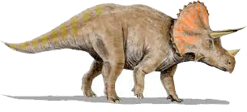

Triceratops (del griego tri-/t??- ="tres", kéras/???a? ="cuerno", y -ops/-?? ="cara";1 "cara de tres cuernos'") es un género de dinosaurios ceratopsianos ceratópsidos, que vivieron a finales del período Cretácico , hace aproximadamente 68 y 66 millones de años, en el Maastrichtiano, en lo que hoy es Norteamérica. Es uno de los últimos géneros en aparecer antes del gran evento de extinción masiva del Cretácico-Terciario.2 Poseía una gran gola ósea (plataforma craneal posterior) y tres cuernos; cuerpo grande sobre cuatro fornidas patas, y con semejanzas en aspecto con el moderno rinoceronte, Triceratops es uno de los más reconocidos de todos los dinosaurios. Aunque compartiera el territorio con el temible Tyrannosaurus y fuera cazado por él,3 no está claro si los dos lucharon de la manera representada a menudo en exhibiciones de museo o en imágenes populares.